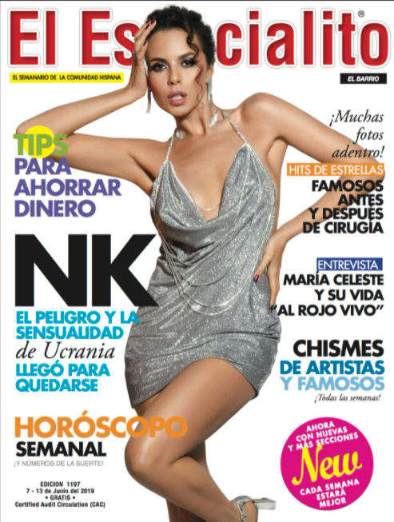

|
«Cosmopolitan» — міжнародний щомісячний журнал для жінок. Перший випуск вийшов у 1886 в Сполучених Штатах, але тоді він був сімейним журналом. Згодом він перетворився на літературний журнал, в кінці 1960-х він став жіночим журналом. Скорочена назва Cosmo; видається компанією «Hearst Magazines». Містить інформацію про стосунки, секс, здоров'я, кар'єру, самовдосконалення, знаменитостей, моду та красу. «Cosmopolitan» має 58 міжнародних випусків і публікується в 110 країнах.. ІсторіяПауль Шліхт сказав у зверненні до своїх перших читачів, що це першокласний журнал для всієї родини. Видавці пообіцяли, що в журналі будуть рубрики, присвячені виключно інтересам жінок — зі статтями про моду і оформлення інтер'єру, присвячені кулінарії і турботі про дітей. У журналі передбачалися і сторінки для дітей. Cosmopolitan швидко став популярним, його тиражі досягли 25 тисяч примірників. На обкладинках знаходилися зображення жінок, які відповідали тогочасним стандартам американського соціуму. У 1888 році у журналу змінилися і власник, і політика, новий редактор ввів кольорові ілюстрації, рецензії на літературні новинки. Cosmo став журналом, в якому друкувалася белетристика — Анні Безант, Амброуз Бірс, Теодор Драйзер, Редьярд Кіплінг, Джек Лондон і Едіт Вортон. Всі ці більш або менш відомі зараз автори публікувалися тоді в журналі для вищого суспільства. Один з перших головних редакторів Джон Волкер за п'ять років підняв тираж з 16 до 400 тисяч примірників. Він став продавати журнал нижче собівартості за рахунок реклами. Cosmo часто виступав у ролі спонсора, підтримуючи найактуальніші та цікаві проекти — наприклад, автогонки. Волкер був шанувальником автомобілізму і всіляко пропагував його на сторінках свого видання. В 1898 році він запропонував приз у $3000 тому, чий екіпаж покаже найкращий час на дистанції довжиною 25 миль між Вашингтоном і редакційною будівлею «Космополитена», тільки що відбудованим в центрі Ірвінгтона. Гонку виграла парова машина братів Стенлі, яким, крім призу, Волкер запропонував фантастичну на ті часи суму в $250 000 за їх підприємство. У 1905 році Вільям Рендолф Херст купив журнал за 400 000 $. Редактором став Чарльз Едвард Рассел, який привніс до видання ряд особливостей. Диктувалося це тим, що сам Рассел входив у групу, що бореться за громадянські права афроамериканців, і разом з однодумцями він входив в Національну Асоціацію за права Чорношкірого населення (NAACP). Природно, журнал на якийсь період перетворився на політичний. У ньому друкувалися злободенні матеріали про становище та утиски негритянського населення в Америці. Жінки чарівної краси з'явилися на обкладинках журналу на початку XX століття. Пов'язано це, перш за все, з ім'ям знаменитого ілюстратора Гаррісона Фішера. Його також називають художником «американської краси». І не даремно, адже Фішер, успішний комерційний ілюстратор, присвятив жінкам все своє життя; був прототипом сьогоднішніх гламурних фотографів. У 1907 році він видав «Книгу Харрісона Харрісона», яка зміцнила його репутацію як видатного ілюстратора красунь. ЗМІ оголосили його офіційним арбітром американської краси, і тисячі жінок прагнули стати його моделями. Однією з найвідоміших його муз стала Дороті Гібсон, зірка перших американських фільмів. Гібсон знаменита ще й тим, що врятувалася під час катастрофи «Титаніка», а потім виконала головну роль у німому 10-хвилинному фільмі, першому фільмі про цю катастрофу. У фільмі Дороті знялася в тій самій вечірній сукні, у якій вона врятувалася з «Титаніка». Cosmopolitan був радий дістати знаменитого ілюстратора. Обкладинку кожного номера прикрашала прекрасна дама. Співпраця Фішера з журналом тривало до смерті художника в 1934. З настанням 1960-х років виявилося, що журнал поступово втратив свою привабливість, читачі стали втрачати до нього інтерес. Приблизно в цей же час Хелен Герлі Браун, автор відомої тоді книги «Секс і самотня жінка», запропонувала компанії Херста перетворити видання в журнал для молодих, цілеспрямованих жінок. У 1965 році Браун стала головним редактором журналу Comopolitan і увійшла в історію видавничого бізнесу. Хелен відкрито стала обговорювати проблеми сексуального життя, зробила журнал більш демократичним, почала розмовляти з жінками як «найкраща подруга», заперечуючи пуританство і святенництво. При ній журнал вийшов на міжнародний ринок. «Сексуальна революція» завоювала американців, і не тільки жінок. Найбільш скандальною сторінкою в історії журналу стала поява в квітні 1972 року на його сторінках оголеного актора Берта Рейнольдса. Тоді він ще не був дуже знаменитим, зате його оголене тіло викликало захват у аудиторії журналу і бум суперечливих міркувань. Тим не менш, перемогла нагота, розкутість і сексуальність. На цьому історичні шукання редакторів журналу закінчилися, вони знайшли свій шлях, який і привів їх до світового успіху. З 1994 року до життя в стилі Cosmo приєдналися росіяни, замінивши журнали «Селянка» і «Робітниця» на російський аналог символу американської життя. Cosmopolitan сьогодніЖурнал, і зокрема його обкладинка, стають все більш відвертими, моделі мають відкриту форму одягу. Крогер, найбільша мережа продовольчих магазинів у Сполучених Штатах, для того, ховає Космополітен за прилавками через скарги на сексуально невідповідні заголовки.[15] У Великій Британії випуск журналу «Cosmopolitan», який вийшов в 1972 році, був першим журналом Cosmopolitan, який розгалужений аж до іншої країни. Він був добре відомий сильним сексуальним вираженням, чоловічою голизною і охопленням таких тем як зґвалтування. У 1999 виходить CosmoGIRL!, журнал додаткового доходу, що має на меті підліткову жіночу аудиторію, був створений для міжнародного кола читачів. Його закрили в грудні 2008 року. Журнал зараз зображує теми, такі як стосунки, краса, мода і здоров'я. Статті, поради і особливості в АМЕРИКАНСЬКОМУ виданні написані здебільшого аудиторії білих жінок. Космополіт має 64 міжнародних виданнях по всьому світу, опубліковані на 35 мовах з поширення в більш ніж 100 країн, що робить Космополіт молодим жіночим журналом, що продається найкраще у світі. Деякі міжнародні випуски видаються в співпраці. Космополітен вже з шістдесятих років був Жіночий журнал, який обговорює такі теми, як секс, здоров'я, фітнес і мода. Космополіт також створив розділ, який називається «запитати у нього», де чоловічий письменник відповідає на запитання читачів про чоловіків і знайомства. ПолітикаУ вересні 2014 року, Космополіт почав підтримувати політичних кандидатів. Рекламні контракти засновані за «встановленими критеріями», узгодженими редакцією журналу. Зокрема, Космополіт буде тільки підтримувати кандидатів, які підтримують законні рівні оплати, легальний аборт, безкоштовні протизаплідні засоби, контроль над зброєю і опонують законам ототожнення виборця. У лютому 2019 року вийшов кліп Насті Каменських на пісню «Попа как у Ким» у кліпі до глядачів звернулися блогери проєкту «Чоткий Паца». Того ж місяця вона знялася для обкладинки українського Cosmopolitan. |
Космополіт Шакіра на обкладинці листопадового випуску 2021 року
NK | Настя Каменських – головна cosmo-girl лютого! Настя Каменських на обкладинці іноземного журналу - cosmo.com.ua |